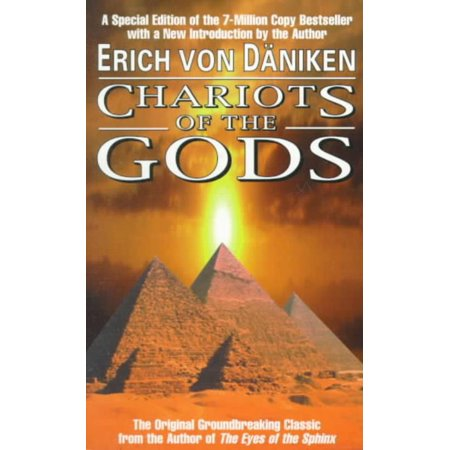

A Swedish writer, who happened to be fascinated by UFO,s wrote about his beliefs surrounding archeology sites such as the Egyptian pyramids, the easter island and stonehenge, and how they may have been connected in some way to extraterrestrial beings.The swedish writer,Erich von Daniken, often suggested that the origins of religions came from the reactions of ancient people when they came in contact with an exterrestial being or some form of alien race.In 1968 Von Daniken went onto published his best-selling book titled "Chariots of the Gods?". In this book he proposes a theory that the mysterious Nazca lines may have actually been used as landing sites for UFOs. He theorized that the design of the lines were made by aliens and may have been created to help steer or navigate their spaceships.The writer also claimed that the line patterns at the site looked similar to a modern airport runway and used this as evidence to support his theory that aliens used the area as a landing strip for their spaceships.According to Von Daniken there is an interesting story in Sanskrit literature that describes an aircraft landed on Earth, and the local people gathered around and watched in amazement as "human-like beings with golden, shimmering skins" would leave there ship to mined for metals and then they would fly away in their ship after this these ancient astronauts apparantly returned to built landing tracks and when completed they left again never to return. The people would then build more runways and figures in the hope that these beings whom they may as perceived as gods would once again return. Another one of von Daniken's theories was that figures, which he assumed to be ancient astronauts, that were found on Nazca clay vessels, were possibly "flying gods" that were visiting from other worlds. when Erich von Daniken's published his book "Chariots of the Gods?", archeologists and scientists such as Maria Reiche stated that von daniken's ideas were outlandish and should be discredited. The scientists then went on to prove that thee lines could have been made using simple tools that the people may of had at the time they were created. "Arrival of the Gods" and "Chariots of the Gods?" were deemed to have no credibility or literary merit at all. Before Von Daniken's books, other authors had also presented the idea of ancient people coming into contact with extraterrestrial life, but von daniken failed to credit these authors, even when using identical or similar evidence.Regardless, Von Daniken's books drew in thousands of visitors and believers to the site. There is still a mystery as why the Nazca lines were created and it is likely that the reason may go unknown forever. Some people believe they were drawn for astronomical reasons while another theory is they were used for water-related religious ceremonies. The mystery and intrigue most likely forged close ties between humans living on earth and the spiritual worlds that most Native American religions have.
